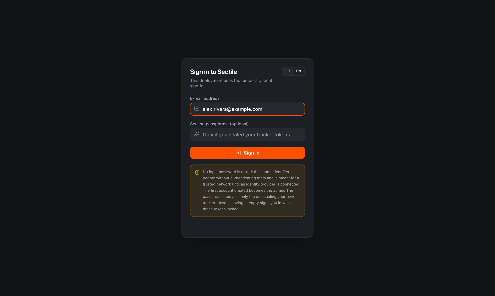
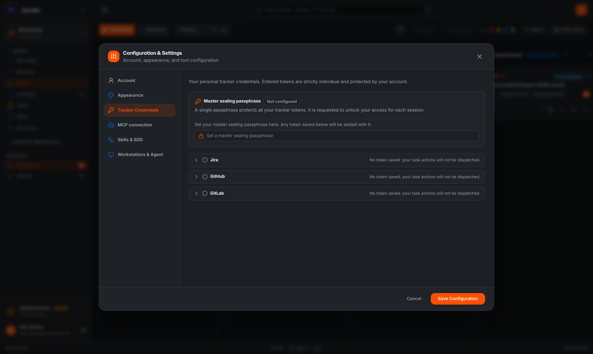
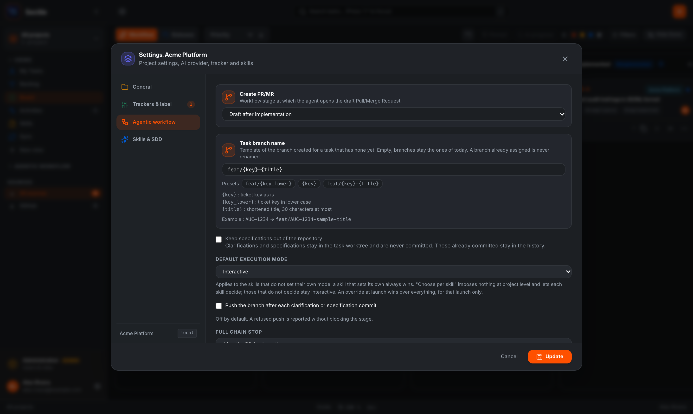
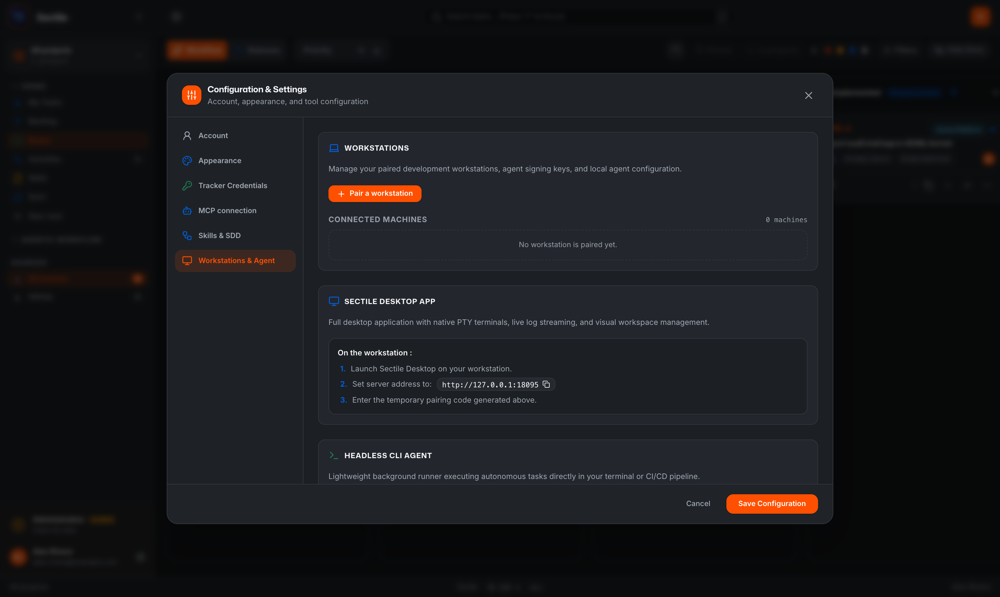
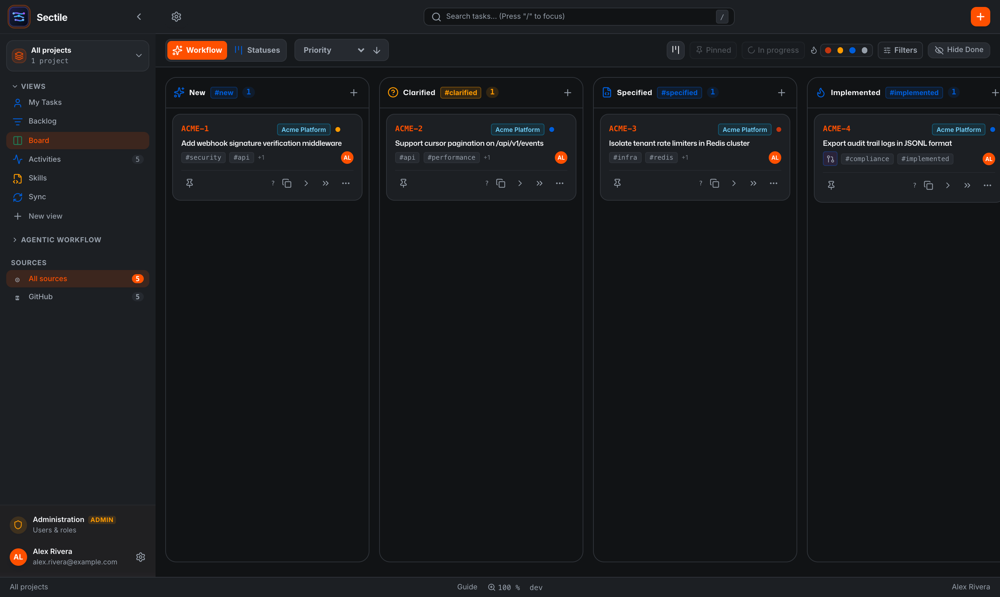
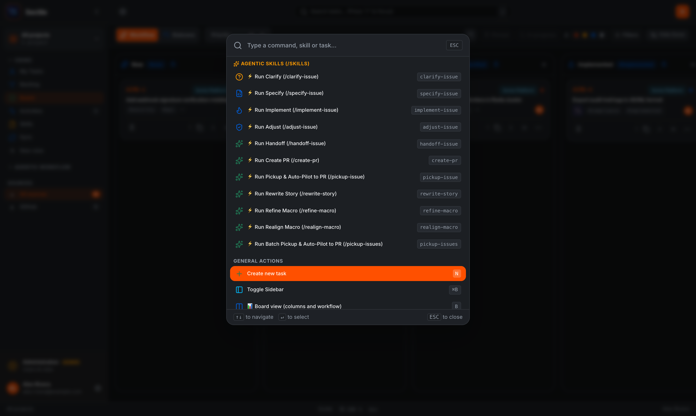
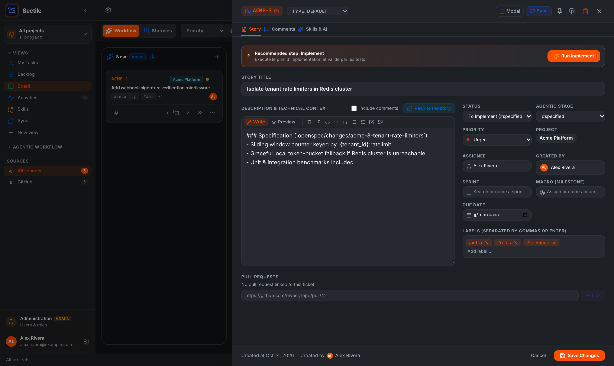
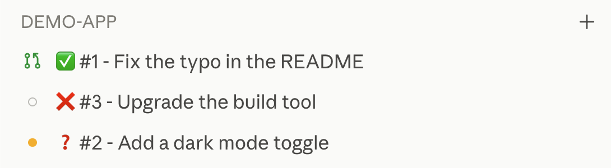
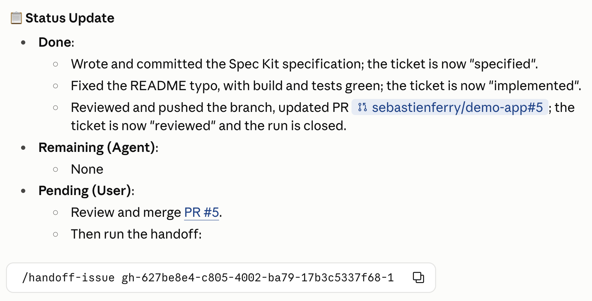

Sectile User & Developer Workflow Guide
Sectile is a local-first workflow orchestrator for software engineering teams. It unites issue trackers (GitHub, GitLab, Jira, and local tasks), Spec-Driven Development (GitHub Spec Kit and OpenSpec), local coding agents (Claude Code, Codex, Antigravity), isolated Git worktrees, and pull requests into a single explicit pipeline.
Serves the web board, REST API, MCP server (/mcp), and background tracker synchronization queue.
Never touches local Git checkouts or launches coding CLIs.
Runs on your development machine (sectile-agent). Owns local repository mappings, isolated
.tasks/worktrees/ checkouts, PTY sessions, and CLI launches.
Bundled Electron companion for local execution queues, interactive PTY and Conversation consoles, worktree diff inspection, rendered Markdown preview, and engine settings.
1. Overview & Component Boundaries 01
Sectile separates shared team coordination from local code execution so that multiple developers can share one board while each task runs in an isolated Git worktree on the developer's own workstation:
- Shared Board, Owned Executions: Every signed-in team member sees all projects, tasks, and active runs on the server. When you launch a workflow step, the server dispatches it exclusively to your paired workstation agent. Only the run owner (or an administrator) can stop an active execution.
- Strict Credential Separation: Administrators configure optional server-level tracker credentials for unattended background synchronization and webhook ingestion. Individual users configure personal tracker credentials in their profile so that ticket creation, comments, transitions, and pull requests are attributed to their own GitHub, GitLab, or Jira account.
- Explicit Stage Contracts: A coding CLI exit code never advances a ticket on its own. Workflow skills report progress through the Sectile MCP server (
start_run,report_waiting,transition_stage,finish_run), and the server verifies branch, commit, and pull request evidence before recording a transition.
2. Sign-In & Personal Tracker Credentials 02
Signing In to the Web Interface
- Open your team's Sectile URL (or
http://localhost:8090for a local server). - Sign in with your organization's OpenID Connect (OIDC) provider, or enter your email address on deployments using local sign-in. On a fresh instance, the first account to sign in automatically receives the Admin role.
- Use Profile → Appearance → Language to switch the interface between French and English at any time, or use the display scale menu in the bottom status bar to adjust interface zoom and card density (Compact, Standard, Comfortable).


Setting Up Personal Tracker Credentials
Open your profile from the bottom of the left sidebar (or the bottom-right status bar) and select Tracker Credentials (Identifiants Trackers):
- Jira OAuth 2.0 (Connect Jira): When an administrator has configured the Atlassian OAuth 2.0 (3LO) integration, click Connect Jira, authorize Sectile on Atlassian's consent screen, and select every Jira site your projects use. Sectile renews the OAuth token automatically in the background without requiring a sealing passphrase.
- Personal API Tokens (GitHub, GitLab, Jira): Select the tracker tab, enter your token (and site URL + email for Jira API tokens), click Verify, and then Save.
- Sealing Your Tokens: Optionally click Seal my tokens (Sceller mes jetons) to encrypt your stored personal API tokens with a master passphrase. When sealed, you unlock your tokens once per session at sign-in or via Unlock all tokens in your profile.
3. Creating & Configuring Projects 03
Click the project picker at the top of the sidebar (or press Shift+P in the command palette) and choose New project…, or click the gear icon in the header to edit the active project:

- General: Set the project name, slug, description, accent color, and whether it opens by default. Enable optional planning views per project: Triage, Roadmap, Sprint Timeline, and Teams.
- Trackers & Label:
- Select GitHub (
owner/repo), GitLab (group/sub/project+ optional self-hosted URL), Jira (project key + site URL), or Local (SQLite-only tasks). - Multiple Trackers & Project Label: A project can bind multiple external trackers and optionally filter imported issues by a specific project label.
- Repositories (Multi-Repo Support): Declare the primary code Git remote URL first, followed by any additional repository remotes the project's tickets may touch.
- Stage & Priority Mapping: Map external tracker columns/statuses to Sectile's six workflow stages, and align tracker priorities with
urgent,high,medium, andlow.
- Select GitHub (
- Agentic Workflow:
- Spec-Driven Design (SDD) Framework: Choose GitHub Spec Kit (
specify) or OpenSpec (openspec). - Branch Name Format: Choose how task branches are named when created by the agent (presets:
feat/{key_lower},{key}, orfeat/{key}-{title}). - Pull Request Creation Stage: Decide when the draft PR/MR is opened (after
clarified, afterspecified, or duringimplemented). - Full Chain Stop Stage: Stop autonomous full-chain runs at
reviewed(default, after PR review/adjustment) orimplemented(before opening/adjusting the PR). - Push Stage Commits (
pushStageCommits): Off by default. When enabled, clarification and specification rounds push their artifact commits to the remote task branch immediately. - Default Execution Mode: Choose whether launches default to Interactive or Autonomous.
- Spec-Driven Design (SDD) Framework: Choose GitHub Spec Kit (
- Skills & SDD: Customize any stage skill's Markdown prompt for this project, or use the Skills view in the sidebar to edit project skill overrides with diff indicators.
4. Workstation Pairing & Local Mapping 04
Installing Sectile Desktop & Workstation Agent
Install Sectile Desktop (which bundles sectile-agent) using your platform's package manager or release archive:
# macOS (Homebrew tap)
brew install --cask sebastienferry/sectile/sectile
# Windows (Scoop bucket)
scoop bucket add sectile https://github.com/sebastienferry/scoop-sectile
scoop install sectile/sectile
Before upgrading an existing installation, quit Sectile Desktop and stop the background agent process
(pkill -f 'Sectile.app/Contents/Resources/sectile-agent' on macOS, or Stop-Process -Name sectile-agent on Windows).

Pairing Your Workstation
- Browser Sign-In (Recommended): Open Sectile Desktop, enter the server URL, and click Sign in with your browser. Or from a terminal, run:
sectile-agent pair --url https://sectile.example.com - Pairing Code (Headless / No Local Browser): In the web interface, open Profile → Workstations & Agent → Pair a workstation, copy the single-use code, and paste it into Desktop's Pairing code field or pass
--code '<code>'tosectile-agent pair.
Pairing stores a workstation-specific API credential in private storage and automatically updates Sectile-managed MCP configurations. Pairing the same workstation again revokes its previous key.
Mapping Local Folders in Desktop
A project on the web server does not give the agent a local directory until you map it on your workstation in Sectile Desktop:
- Local Repository: Click Add project in Desktop's sidebar and select your local Git checkout with Choose folder…. If the chosen folder is not yet a Git repository, Desktop can initialize one on
mainwith an empty initial commit so worktrees can be created. - Specifications Folders (Macro & Issue): By default, specifications live in the code repository. Under Folders, you can point Macro specifications folder or Issue specifications folder to separate directories or Git repositories. When the Issue specifications folder is a separate Git repo, tasks get a dedicated spec worktree and branch (
SECTILE_SPEC_WORKTREE). - Attached Folders: Attach extra local folders or companion repositories to give every task launch additional context. Attached Git repositories with a remote are modified via their own worktree and PR; plain folders are edited in place. You can also attach a folder mid-session from a running conversation or console using Add folder….
- Any Repository Mode: Enable Any repository in a project's Desktop settings when tickets may modify repositories not listed on the project. Combined with external or dropped spec artifacts, the agent creates no worktree in the primary code repository unless the task actually modifies it.
5. Web Board, Backlog & Planning Views 05

- Kanban Board (B): Displays tasks across the six workflow columns (or grouped by raw tracker status columns). Toggle cards between Condensed and Full modes, collapse the Finished column, pin active tickets to the top Pinned Bar for instant switching, and drag cards across columns to update both their workflow stage and remote tracker status.
- Saved Cross-Project Views: Click + New view in the sidebar to save a named view combining one or more projects and label filters.
- List / Backlog View (L): High-density table supporting multi-column sorting (Key, Title, Stage, Priority, Dates), status grouping, and batch selection.
- Triage View (TR): Surfaces unclassified tasks missing a macro, sprint, or team assignment so you can organize incoming work rapidly.
- Roadmap View (R): Organizes high-level Macros (initiatives/epics) across NOW, NEXT, and FUTURE horizons. Inspect a macro's child tickets, run
refine-macroto slice a macro framing into structured tasks, or runrealign-macroto synchronize a macro specification with its current ticket slicing. - Sprint Timeline (TL): Visualizes sprint horizons, start/end dates, and completion progress across active and upcoming sprints or GitLab milestones/iterations.
- Teams View: Breaks down active workload and stage distribution person by person across teams.
- Tracker Backlog (Hors projet): Lists issues from a shared tracker that do not yet carry a project's identifying label, letting you assign them to a project in one click.
- Activities (A) & Sync (S): Real-time monitor for all agent executions and background tracker synchronization jobs. Filter runs by Waiting for you to spot interactive sessions blocked on a question.

6. The 5-Stage Agentic Development Workflow 06
Every ticket progresses through five explicit, contract-verified stages with a human merge gate before handoff:

| Stage & Skill | Transition | What It Does & Verification Contract |
|---|---|---|
1. Clarifyclarify-issue |
#new → #clarified |
Analyzes the ticket against the codebase in numbered rounds, writes docs/clarifications/<id>.md, and publishes each round's report on the ticket. Calls report_waiting before asking essential product questions. Never transitions while any product question remains unanswered.
|
2. Specifyspecify-issue |
#clarified → #specified |
Produces the executable technical specification using the project's SDD framework:
GitHub Spec Kit (specs/<KEY>-<slug>/{spec,plan,tasks}.md) or
OpenSpec (openspec/changes/<KEY>-<slug>/), and posts a specification digest on the ticket.
|
3. Implementimplement-issue |
#specified → #implemented |
Implements the specification inside the task's isolated Git worktree (.tasks/worktrees/<branch>), adds tests, verifies the project's build/linters/test suite, pushes commits, and creates or updates the Pull Request / Merge Request.
|
4. Adjustadjust-issue |
#implemented → #reviewed |
Reviews the branch diff like a peer reviewer, addresses review comments, fixes regressions, updates documentation and CHANGELOG.md when user-visible, pushes to the existing PR, and marks it ready for human review.
|
| Human Review & Merge | At #reviewed |
Autonomous chains always stop here (or at #implemented if configured). A human reviews and merges the Pull Request on GitHub or GitLab.
|
5. Handoffhandoff-issue |
#reviewed → #finished |
Confirms the PR is merged, posts the handover summary and acceptance checklist on the ticket, transitions the ticket to #finished, and safely prunes clean local worktrees.
|
Single-Step Runs vs. Autonomous Full Chain (pickup-issue)
- Advance One Step: Click the primary stage action on a task card (or choose Advance interactively / Advance autonomously in the card's
…menu) to run only the next stage skill. - Full Chain (
>>/pickup-issue): Click the double-chevron Full chain button on a card to runpickup-issuein autonomous mode starting from the ticket's current stage through to the project's stop stage (#reviewedby default). Previously completed stages are not repeated. - Batch Pickup (
pickup-issues): Select multiple tickets on the board or backlog and launch a batch pickup. All selected tickets share a single coordinated run and branch/worktree context, updating each ticket's status on the board as its turn begins. - Execution Mode & Model Precedence:
- Execution Mode: One-off launch override → Skill's configured mode → Project default mode → Interactive.
- AI Model: Card or Task Detail one-off model pick → Workstation skill/engine model → Project skill/default model → Global model.
7. Using Sectile with Claude Code, Codex & MCP 07
Installing Skills & the Sectile MCP Server
The workstation agent never modifies your coding CLI configuration unasked. Install the skills and MCP server using one of two methods:
- Method 1 — Direct Setup (Claude Code, Codex, Antigravity):
Open Sectile Desktop → Settings → Deployment to click Install skills and Register MCP (choose Remote HTTP, Local HTTP proxy, or STDIO), or run from your terminal:
If Claude Code holds an outdated or mismatched key in a project config, Desktop's MCP configuration panel flags it and offers a one-click Repair button.sectile-agent init --provider claude # or: codex, agy - Method 2 — Claude Plugin (Claude Code):
Build and install the self-contained Claude plugin so skills are namespaced as
/sectile:clarify-issue,/sectile:pickup-issue, etc.:make plugin VERSION=0.1.0 OUT=/tmp/sectile-plugin ARGS=-marketplace claude plugin marketplace add /tmp/sectile-plugin claude plugin install sectile@sectile
Claude Desktop & CLI Session Conventions
When a Sectile skill runs inside the Claude desktop app or CLI, it keeps your sidebar organized automatically:
- Automatic Title & Project Group: Identifies the ticket and renames the session
<ticket ID> - <ticket title>(or#47 (+2) - ...for batch pickups), filing it under a sidebar group named after the Sectile project. - Live Status Emoji Prefix:
- No prefix while working (the app already displays its running spinner).
❓— Waiting for you: The skill calledreport_waitingand needs your answer to continue.✅— Completed: The skill verified and recorded its stage transition, ending with a ready-to-copy command block for the next step (e.g./handoff-issue <task ID>).❌— Failed or blocked: The run stopped on a blocker or check failure and explains what needs fixing.
- Tracker & PR Links: Displays clickable
Ticket:andPR:links right after the session rename and binds GitHub pull requests to the session bar.


/handoff-issue command
Click to enlarge
8. Sectile Desktop Companion Guide 08
Consoles, Conversations & Execution Queue
- Execution Sidebar & Queue: Executions are grouped by project and task. Click the funnel icon on a project header to inspect its Execution Queue and active concurrency slots (
running/maximum). - Skill Result Indicator: Independent of process exit, the task bar and row badge confirm whether the server verified the stage transition (Skill completed vs. Execution ended · skill completion unconfirmed).
- Interactive Terminal vs. Conversation View: Under Settings → General → AI consoles → Conversation, interactive Claude Code and Codex launches open in a rich streaming chat view instead of a raw terminal:
- Tool calls render as expandable cards (file diffs, shell commands, checklists, searches).
- Permission requests wait in cards with Allow, Always allow (persisted per project), Allow for this conversation (Codex), or Deny.
- Type
/in Claude conversations to complete slash commands (including/mcp,/usage,/context),$in Codex conversations to complete installed skills, or prefix a line with!to run a local shell command in the worktree. - Click the Sectile MCP status chip in the composer to verify MCP connectivity at any time.
Inspecting Worktree Changes & Multi-Folder Context
- Changes & Rendered Markdown: Switch any execution from Console to Changes to inspect the net unified diff (committed, staged, unstaged, and untracked files) against the base branch. Select any
.mdfile and toggle Rendered to read formatted Markdown with local repository images. - Folder Switcher & External Editor: When a task spans multiple repositories, attached folders, or a separate specifications worktree, click the chevron next to the checkout path below the task title to switch which folder Changes inspects or open it directly in VS Code, Cursor, Zed, or Sublime Text.
Tickets List, Project Board & Task Editor in Desktop
- Tickets List & Project Board: Hover a project and click Open tasks for a sortable table where you can cycle a task's assigned AI Engine in one click, or choose Open board to view and drag cards across all six workflow columns directly inside Desktop.
- Create & Edit Tasks (Cmd/Ctrl+N): Create remote tracker tickets or edit existing ones (title, assignee, ordered PR links, and WYSIWYG/raw Markdown description) without leaving Desktop.
Claude Sandbox Autonomy & Commands Outside the Sandbox
- Under Claude settings (workstation-wide or per-project), click Autonomy in sandbox to enable Claude's sandbox, auto-approve sandboxed shell commands, and block unsandboxed retries.
- Apply built-in Toolchain presets to allow required package-manager domains and cache directories.
- Use Commands outside the sandbox (or the Outside the sandbox (git, gh, glab) preset) to allow specific commands like
git push,gh, orglabto access SSH keys and system certificates while keeping all other commands strictly sandboxed.
9. Step-by-Step How-To Guides 09
Practical recipes for the most common day-to-day workflows in Sectile:
Pair Your Workstation & Map Your First Project
Connect your local machine to your team's Sectile server, map your Git clone, and deploy the workflow skills.
- Open Sectile Desktop, enter your server URL (e.g.
https://sectile.example.comorhttp://localhost:8090), and click Sign in with your browser. Approve the sign-in in your browser tab. - Verify that the bottom-left footer of Desktop shows a green dot with Connected.
- In the Desktop sidebar next to PROJECTS, click + (or press Cmd/Ctrl+K → Add project) and pick your server project.
- In the project's Folders tab, click Choose folder… next to Local repository, select your local Git clone, and click Save local configuration (Cmd/Ctrl+Enter).
- Click the gear icon at the bottom of the Desktop sidebar to open workstation Settings → Deployment:
- Under Global AI engine setup, select your engine (Claude Code, Codex, or Antigravity) and click Install skills and Register MCP.
- Under Local SDD setup, select your project and click Initialize if Spec Kit or OpenSpec is not yet initialized in that repository.
Connect Personal Tracker Credentials & Seal Tokens
Ensure every ticket, comment, and stage transition you trigger is attributed to your own GitHub, GitLab, or Jira account.
- In the web interface, click your name in the bottom-left sidebar (or bottom-right status bar) to open Configuration & Settings, then select Tracker Credentials.
- For Jira (with OAuth configured): Click Connect Jira, approve access on Atlassian's consent screen, and check all Jira sites your projects use. No token or passphrase is needed.
- For GitHub, GitLab, or Jira API tokens: Pick the provider tab, paste your personal token (plus Jira site URL and account email for Jira), click Verify, and once verified click Save.
- Optional encryption at rest: Click Seal my tokens and enter a master sealing passphrase. On future sign-ins, enter that passphrase on the sign-in screen (or click Unlock all tokens in your profile) to unlock your personal credentials for the session.
Take a Ticket from Idea (#new) to Merged PR (#finished) Step by Step
Walk a feature or bugfix through all five verified stages with interactive control at each boundary.
- Create or select the ticket: Press N on the web board (or Cmd/Ctrl+N in Desktop) to create a ticket. It starts in To Clarify (
#new). - Stage 1 — Clarify: Click Clarify on the card. In Desktop (Console or Conversation view), answer any product questions the agent asks. When no open questions remain and you confirm, the skill writes
docs/clarifications/<id>.md, posts the report to the ticket, and transitions it to To Specify (#clarified). - Stage 2 — Specify: Click Specify on the card (or Next: Specify in Desktop's toolbar). The agent generates the Spec Kit (
specs/<KEY>-<slug>/) or OpenSpec (openspec/changes/<KEY>-<slug>/) artifacts, posts a specification digest on the ticket, and moves it to To Implement (#specified). - Stage 3 — Implement: Click Code (or Next: Implement). Inside the isolated worktree (
.tasks/worktrees/<branch>), the agent writes the code and tests, runs the build and test suite, pushes the branch, opens or updates the Pull Request, and transitions the ticket to To Test (#implemented). - Stage 4 — Adjust: Click Adjust (or Next: Adjust). The agent reviews the full branch diff, addresses any PR review comments, updates documentation/changelog if user-visible, pushes the fixes, and moves the ticket to In Review / PR (
#reviewed). - Human Merge & Stage 5 — Handoff: Click the PR badge on the card to review and merge the Pull Request on GitHub/GitLab. Once merged, click Handoff on the card: the agent verifies the merge, posts the final acceptance checklist, moves the ticket to Finished (
#finished), and cleans up the local worktree.
Run an Autonomous Full-Chain Pickup or Multi-Ticket Batch
Let the agent autonomously execute Clarify → Specify → Implement → Adjust up to the PR review gate.
- Single ticket Full Chain: On a full task card on the web board, click the double-chevron Full chain (
>>) button (or open the card's…menu in condensed view and select Full chain). - Sectile launches
pickup-issuein autonomous mode starting from the ticket's current stage. If the ticket was already#clarifiedor#specified, earlier stages are skipped automatically. - Multi-ticket Batch Pickup: Tick the selection checkboxes on two or more cards on the Board or Backlog view, then click Batch pickup in the selection bar at the bottom. All selected tickets run sequentially inside a shared worktree and branch via
pickup-issues, updating each ticket on the board as it progresses. - Monitor progress: Watch the live read-only stream in Sectile Desktop or check the Activities (A) view on the web. If the agent encounters an unavoidable product ambiguity or a failing check it cannot resolve, it halts cleanly and posts the blocker on the ticket. Otherwise, it stops at
#reviewedwith the Pull Request ready for your review.
Run a Workflow Skill in an Existing Claude Code or Codex Session
Drive a tracked Sectile workflow stage from a Claude desktop app or CLI terminal you already have open.
- Make sure the Sectile MCP server is registered for your CLI (in Desktop under Settings → Deployment → MCP configuration, or via the
sectileClaude plugin). - On the web board, hover the task card and click the Copy icon (which copies the next workflow stage prompt in one click), or open the task detail drawer to copy either the next-step prompt or the full
/pickup-issueprompt. - Paste the copied prompt into your Claude Code or Codex session opened on the repository.
- The skill automatically calls
start_runover MCP, renames your Claude session<key> - <title>under your project's sidebar group, shows❓when waiting for your input, and marks✅upon callingtransition_stageandfinish_run.
Work Across Multiple Repositories or Separate Specification Folders
Coordinate changes that span multiple Git repositories or keep Spec Kit / OpenSpec files in a dedicated specifications repository.
- Declare project repositories (Web): In the web Project Settings → General, enter your primary code repository under Git Remote URL and add companion repositories under Repositories.
- Map folders on your workstation (Desktop): In Sectile Desktop → Project Settings → Folders:
- Map each declared repository to its local checkout under Other repositories.
- Or untick Issue specifications live in the code repository and pick a separate Issue specifications folder (e.g. a dedicated architecture/specs Git repo).
- Or enable Any repository so tickets can target any Git repository on the fly (cloned automatically into your Clones folder when not yet checked out locally).
- Inspect multi-repo diffs: During or after a run in Desktop, click the chevron next to the worktree path beneath the task title to switch between the primary code worktree, secondary repository worktrees, and the specifications worktree in the Changes inspector or open any of them in your editor.
Slice a Macro on the Roadmap (refine-macro) & Realign Specs (realign-macro)
Break a high-level initiative or epic into actionable board tickets and keep its macro specification synchronized as scope evolves.
- Enable the Roadmap view in your project's settings (General → Workspace Views → Roadmap) and press Cmd/Ctrl+K → R to open the Roadmap.
- Create or select a Macro in the NOW, NEXT, or FUTURE horizon and write its high-level framing description.
- Launch
refine-macrofrom the macro's actions: the agent analyzes the framing against the codebase and SDD framework, produces a structured specification and ordered checklist of story todos, and updates the macro via MCP. - In the macro panel on the Roadmap, review the proposed slicing lines, choose the target project/tracker if needed, and click Create stories to instantiate the linked tickets on the board.
- Later, if tickets are added, renamed, or removed during implementation, run
realign-macroon the macro to bring its specification document back in line with the actual ticket slicing without rewriting existing section bodies.
10. Keyboard Shortcuts Reference 10
Web Interface Shortcuts
| Shortcut | Action |
|---|---|
| Cmd+K / Ctrl+K | Open or close the global Command Palette |
| Cmd+B / Ctrl+B | Collapse or expand the left navigation sidebar |
| / | Focus the global task search bar |
| N or C | Open the Quick Add task modal |
| B / L | Switch to Board view (B) or List / Backlog view (L) |
| A / S | Switch to Activities view (A) or Sync view (S) |
| TR / R / TL | In Command Palette: jump to Triage, Roadmap, or Sprint Timeline |
| Shift+S / J | In Command Palette: synchronize the active project (Shift+S) or Jira (J) |
| Shift+P | In Command Palette: create a new project |
| T / G / ? | In Command Palette: toggle Light/Dark theme (T), UI language (G), or open this User Guide (?) |
| Escape | Close active modal, drawer, command palette, or clear active search query |
Sectile Desktop Shortcuts
| Shortcut | Action |
|---|---|
| Cmd+K / Ctrl+K | Open the Desktop Command Palette (search actions, projects, tasks, and running consoles) |
| Cmd+N / Ctrl+N | Open the New Task page (outside a focused terminal) |
| Cmd+, / Ctrl+, | Open Workstation Settings |
| Cmd+Enter / Ctrl+Enter | Submit the active form (Create task, Save local configuration) |
| Enter / Shift+Enter | In Conversation composer: send message (Enter) or insert newline (Shift+Enter) |
| Escape | Stop active streaming answer in Conversation composer, or close open Tickets / Board / Settings view |